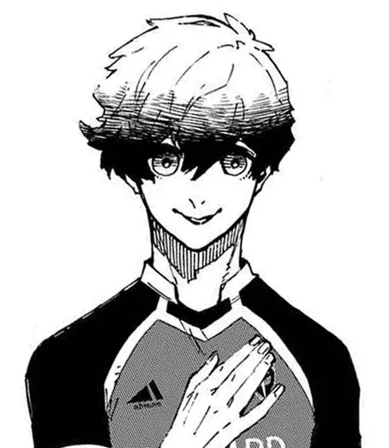

Olhares
Trezentos atacantes entram no Blue Lock. A história cabe em cinco movimentos e em dez olhares. Apague a luz, se puder.
O convite
Uma final perdida, uma carta da Federação e um treinador que quer criar o atacante mais egoísta do mundo.
Ler o capítulo
Ele lê o campo antes que o campo aconteça.

Escolheu trezentos para encontrar um.
Time Z
O quarto dos últimos do ranking descobre que, no Blue Lock, só o gol convence.
Ler o capítulo
Dentro dele, um monstro pede a bola.

Força honesta, posta à prova.
Devorar
Times que se desmancham a cada jogo: quem vence escolhe quem leva do derrotado.
Ler o capítulo
O tédio, até que um gol o acorda.

Uma raiva fria, com um só endereço.
Blue Lock × Sub-20
O projeto inteiro vale um jogo: o Blue Lock Eleven contra a seleção Sub-20 do Japão.
Ler o capítulo
O irmão que já estava do outro lado do mundo.

Instinto puro, sem freio nem desculpa.
Neo Egoist League
Cinco clubes europeus, cinco Master Strikers e um leilão que põe preço em cada ego.
Ler o capítulo
Uma coroa que ele mesmo se deu.

Joga para um único rei.
Só um sai daqui como o melhor atacante do mundo.
Voltar aos retratos